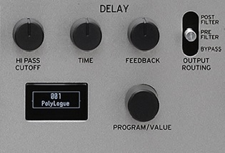

Delay
The "Delay" section allows the user to add delay to the generated sound by using the knobs "Hi Bypass Cutoff", "Time" and "Feedback". The "Hi Bypass" knob is used to cut off the lower pitched soundwaves, only leaving the higher pitched soundwave hearable for the user. The "Time" knob is used to determine the time that the soundwave is delayed, and the "Feedback" knob is used to determine how long the delayed effect is hearable. Last but not least there is a lever with the options "Post Filter", "Pre Filter" or "Bypass". This is the selection of when the bypass effect should take effect.
